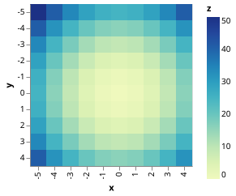
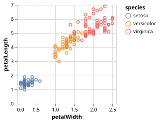
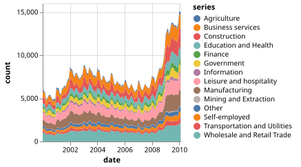
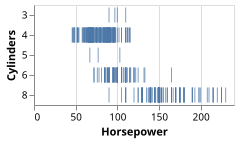

Simple Charts
Simple Bar Chart
using VegaLite, DataFrames
data = DataFrame(
a=["A","B","C","D","E","F","G","H","I"],
b=[28,55,43,91,81,53,19,87,52]
)
data |> @vlplot(:bar, :a, :b)"><g class="mark-group role-frame root" role="graphics-object" aria-roledescription="group mark container"><g transform="translate(0,0)"><path class="background" aria-hidden="true" d="M0.5,0.5h180v200h-180Z" stroke="%23ddd"/><g><g class="mark-group role-axis" aria-hidden="true"><g transform="translate(0.5,0.5)"><path class="background" aria-hidden="true" d="M0,0h0v0h0Z" pointer-events="none"/><g><g class="mark-rule role-axis-grid" pointer-events="none"><line transform="translate(0,200)" x2="180" y2="0" stroke="%23ddd" stroke-width="1" opacity="1"/><line transform="translate(0,160)" x2="180" y2="0" stroke="%23ddd" stroke-width="1" opacity="1"/><line transform="translate(0,120)" x2="180" y2="0" stroke="%23ddd" stroke-width="1" opacity="1"/><line transform="translate(0,80)" x2="180" y2="0" stroke="%23ddd" stroke-width="1" opacity="1"/><line transform="translate(0,40)" x2="180" y2="0" stroke="%23ddd" stroke-width="1" opacity="1"/><line transform="translate(0,0)" x2="180" y2="0" stroke="%23ddd" stroke-width="1" opacity="1"/></g></g><path class="foreground" aria-hidden="true" d="" pointer-events="none" display="none"/></g></g><g class="mark-group role-axis" role="graphics-symbol" aria-roledescription="axis" aria-label="X-axis titled %27a%27 for a discrete scale with 9 values: A, B, C, D, E, ending with I"><g transform="translate(0.5,200.5)"><path class="background" aria-hidden="true" d="M0,0h0v0h0Z" pointer-events="none"/><g><g class="mark-rule role-axis-tick" pointer-events="none"><line transform="translate(10,0)" x2="0" y2="5" stroke="%23888" stroke-width="1" opacity="1"/><line transform="translate(30,0)" x2="0" y2="5" stroke="%23888" stroke-width="1" opacity="1"/><line transform="translate(50,0)" x2="0" y2="5" stroke="%23888" stroke-width="1" opacity="1"/><line transform="translate(70,0)" x2="0" y2="5" stroke="%23888" stroke-width="1" opacity="1"/><line transform="translate(90,0)" x2="0" y2="5" stroke="%23888" stroke-width="1" opacity="1"/><line transform="translate(110,0)" x2="0" y2="5" stroke="%23888" stroke-width="1" opacity="1"/><line transform="translate(130,0)" x2="0" y2="5" stroke="%23888" stroke-width="1" opacity="1"/><line transform="translate(150,0)" x2="0" y2="5" stroke="%23888" stroke-width="1" opacity="1"/><line transform="translate(170,0)" x2="0" y2="5" stroke="%23888" stroke-width="1" opacity="1"/></g><g class="mark-text role-axis-label" pointer-events="none"><text text-anchor="end" transform="translate(9.5,7) rotate(270) translate(0,3)" font-family="sans-serif" font-size="10px" fill="%23000" opacity="1">A</text><text text-anchor="end" transform="translate(29.5,7) rotate(270) translate(0,3)" font-family="sans-serif" font-size="10px" fill="%23000" opacity="1">B</text><text text-anchor="end" transform="translate(49.5,7) rotate(270) translate(0,3)" font-family="sans-serif" font-size="10px" fill="%23000" opacity="1">C</text><text text-anchor="end" transform="translate(69.5,7) rotate(270) translate(0,3)" font-family="sans-serif" font-size="10px" fill="%23000" opacity="1">D</text><text text-anchor="end" transform="translate(89.5,7) rotate(270) translate(0,3)" font-family="sans-serif" font-size="10px" fill="%23000" opacity="1">E</text><text text-anchor="end" transform="translate(109.5,7) rotate(270) translate(0,3)" font-family="sans-serif" font-size="10px" fill="%23000" opacity="1">F</text><text text-anchor="end" transform="translate(129.5,7) rotate(270) translate(0,3)" font-family="sans-serif" font-size="10px" fill="%23000" opacity="1">G</text><text text-anchor="end" transform="translate(149.5,7) rotate(270) translate(0,3)" font-family="sans-serif" font-size="10px" fill="%23000" opacity="1">H</text><text text-anchor="end" transform="translate(169.5,7) rotate(270) translate(0,3)" font-family="sans-serif" font-size="10px" fill="%23000" opacity="1">I</text></g><g class="mark-rule role-axis-domain" pointer-events="none"><line transform="translate(0,0)" x2="180" y2="0" stroke="%23888" stroke-width="1" opacity="1"/></g><g class="mark-text role-axis-title" pointer-events="none"><text text-anchor="middle" transform="translate(90,27.7490234375)" font-family="sans-serif" font-size="11px" font-weight="bold" fill="%23000" opacity="1">a</text></g></g><path class="foreground" aria-hidden="true" d="" pointer-events="none" display="none"/></g></g><g class="mark-group role-axis" role="graphics-symbol" aria-roledescription="axis" aria-label="Y-axis titled %27b%27 for a linear scale with values from 0 to 100"><g transform="translate(0.5,0.5)"><path class="background" aria-hidden="true" d="M0,0h0v0h0Z" pointer-events="none"/><g><g class="mark-rule role-axis-tick" pointer-events="none"><line transform="translate(0,200)" x2="-5" y2="0" stroke="%23888" stroke-width="1" opacity="1"/><line transform="translate(0,160)" x2="-5" y2="0" stroke="%23888" stroke-width="1" opacity="1"/><line transform="translate(0,120)" x2="-5" y2="0" stroke="%23888" stroke-width="1" opacity="1"/><line transform="translate(0,80)" x2="-5" y2="0" stroke="%23888" stroke-width="1" opacity="1"/><line transform="translate(0,40)" x2="-5" y2="0" stroke="%23888" stroke-width="1" opacity="1"/><line transform="translate(0,0)" x2="-5" y2="0" stroke="%23888" stroke-width="1" opacity="1"/></g><g class="mark-text role-axis-label" pointer-events="none"><text text-anchor="end" transform="translate(-7,203)" font-family="sans-serif" font-size="10px" fill="%23000" opacity="1">0</text><text text-anchor="end" transform="translate(-7,163)" font-family="sans-serif" font-size="10px" fill="%23000" opacity="1">20</text><text text-anchor="end" transform="translate(-7,123)" font-family="sans-serif" font-size="10px" fill="%23000" opacity="1">40</text><text text-anchor="end" transform="translate(-7,83)" font-family="sans-serif" font-size="10px" fill="%23000" opacity="1">60</text><text text-anchor="end" transform="translate(-7,42.99999999999999)" font-family="sans-serif" font-size="10px" fill="%23000" opacity="1">80</text><text text-anchor="end" transform="translate(-7,3)" font-family="sans-serif" font-size="10px" fill="%23000" opacity="1">100</text></g><g class="mark-rule role-axis-domain" pointer-events="none"><line transform="translate(0,200)" x2="0" y2="-200" stroke="%23888" stroke-width="1" opacity="1"/></g><g class="mark-text role-axis-title" pointer-events="none"><text text-anchor="middle" transform="translate(-30.0869140625,100) rotate(-90) translate(0,-2)" font-family="sans-serif" font-size="11px" font-weight="bold" fill="%23000" opacity="1">b</text></g></g><path class="foreground" aria-hidden="true" d="" pointer-events="none" display="none"/></g></g><g class="mark-rect role-mark marks" role="graphics-object" aria-roledescription="rect mark container"><path aria-label="a: A; b: 28" role="graphics-symbol" aria-roledescription="bar" d="M1,144h18v56h-18Z" fill="%234c78a8"/><path aria-label="a: B; b: 55" role="graphics-symbol" aria-roledescription="bar" d="M21,89.99999999999999h18v110.00000000000001h-18Z" fill="%234c78a8"/><path aria-label="a: C; b: 43" role="graphics-symbol" aria-roledescription="bar" d="M41,114.00000000000001h18v85.99999999999999h-18Z" fill="%234c78a8"/><path aria-label="a: D; b: 91" role="graphics-symbol" aria-roledescription="bar" d="M61,17.999999999999993h18v182h-18Z" fill="%234c78a8"/><path aria-label="a: E; b: 81" role="graphics-symbol" aria-roledescription="bar" d="M81,37.999999999999986h18v162h-18Z" fill="%234c78a8"/><path aria-label="a: F; b: 53" role="graphics-symbol" aria-roledescription="bar" d="M101,94h18v106h-18Z" fill="%234c78a8"/><path aria-label="a: G; b: 19" role="graphics-symbol" aria-roledescription="bar" d="M121,162h18v38h-18Z" fill="%234c78a8"/><path aria-label="a: H; b: 87" role="graphics-symbol" aria-roledescription="bar" d="M141,26h18v174h-18Z" fill="%234c78a8"/><path aria-label="a: I; b: 52" role="graphics-symbol" aria-roledescription="bar" d="M161,96h18v104h-18Z" fill="%234c78a8"/></g></g><path class="foreground" aria-hidden="true" d="" display="none"/></g></g></g></svg>)
Simple Heatmap
using VegaLite, DataFrames
x = [j for i in -5:4, j in -5:4]
y = [i for i in -5:4, j in -5:4]
z = x.^2 .+ y.^2
data = DataFrame(x=vec(x'),y=vec(y'),z=vec(z'))
data |> @vlplot(:rect, "x:o", "y:o", color=:z)
Simple Histogram
using VegaLite, VegaDatasets
dataset("movies") |>
@vlplot(:bar, x={:IMDB_Rating, bin=true}, y="count()")
Simple Line Chart
using VegaLite
x = 0:100
y = sin.(x./5)
@vlplot(:line, x=x, y={y, title="sin(x)"})"><g class="mark-group role-frame root" role="graphics-object" aria-roledescription="group mark container"><g transform="translate(0,0)"><path class="background" aria-hidden="true" d="M0.5,0.5h200v200h-200Z" stroke="%23ddd"/><g><g class="mark-group role-axis" aria-hidden="true"><g transform="translate(0.5,200.5)"><path class="background" aria-hidden="true" d="M0,0h0v0h0Z" pointer-events="none"/><g><g class="mark-rule role-axis-grid" pointer-events="none"><line transform="translate(0,-200)" x2="0" y2="200" stroke="%23ddd" stroke-width="1" opacity="1"/><line transform="translate(40,-200)" x2="0" y2="200" stroke="%23ddd" stroke-width="1" opacity="1"/><line transform="translate(80,-200)" x2="0" y2="200" stroke="%23ddd" stroke-width="1" opacity="1"/><line transform="translate(120,-200)" x2="0" y2="200" stroke="%23ddd" stroke-width="1" opacity="1"/><line transform="translate(160,-200)" x2="0" y2="200" stroke="%23ddd" stroke-width="1" opacity="1"/><line transform="translate(200,-200)" x2="0" y2="200" stroke="%23ddd" stroke-width="1" opacity="1"/></g></g><path class="foreground" aria-hidden="true" d="" pointer-events="none" display="none"/></g></g><g class="mark-group role-axis" aria-hidden="true"><g transform="translate(0.5,0.5)"><path class="background" aria-hidden="true" d="M0,0h0v0h0Z" pointer-events="none"/><g><g class="mark-rule role-axis-grid" pointer-events="none"><line transform="translate(0,200)" x2="200" y2="0" stroke="%23ddd" stroke-width="1" opacity="1"/><line transform="translate(0,150)" x2="200" y2="0" stroke="%23ddd" stroke-width="1" opacity="1"/><line transform="translate(0,100)" x2="200" y2="0" stroke="%23ddd" stroke-width="1" opacity="1"/><line transform="translate(0,50)" x2="200" y2="0" stroke="%23ddd" stroke-width="1" opacity="1"/><line transform="translate(0,0)" x2="200" y2="0" stroke="%23ddd" stroke-width="1" opacity="1"/></g></g><path class="foreground" aria-hidden="true" d="" pointer-events="none" display="none"/></g></g><g class="mark-group role-axis" role="graphics-symbol" aria-roledescription="axis" aria-label="X-axis for a linear scale with values from 0 to 100"><g transform="translate(0.5,200.5)"><path class="background" aria-hidden="true" d="M0,0h0v0h0Z" pointer-events="none"/><g><g class="mark-rule role-axis-tick" pointer-events="none"><line transform="translate(0,0)" x2="0" y2="5" stroke="%23888" stroke-width="1" opacity="1"/><line transform="translate(40,0)" x2="0" y2="5" stroke="%23888" stroke-width="1" opacity="1"/><line transform="translate(80,0)" x2="0" y2="5" stroke="%23888" stroke-width="1" opacity="1"/><line transform="translate(120,0)" x2="0" y2="5" stroke="%23888" stroke-width="1" opacity="1"/><line transform="translate(160,0)" x2="0" y2="5" stroke="%23888" stroke-width="1" opacity="1"/><line transform="translate(200,0)" x2="0" y2="5" stroke="%23888" stroke-width="1" opacity="1"/></g><g class="mark-text role-axis-label" pointer-events="none"><text text-anchor="start" transform="translate(0,15)" font-family="sans-serif" font-size="10px" fill="%23000" opacity="1">0</text><text text-anchor="middle" transform="translate(40,15)" font-family="sans-serif" font-size="10px" fill="%23000" opacity="1">20</text><text text-anchor="middle" transform="translate(80,15)" font-family="sans-serif" font-size="10px" fill="%23000" opacity="1">40</text><text text-anchor="middle" transform="translate(120,15)" font-family="sans-serif" font-size="10px" fill="%23000" opacity="1">60</text><text text-anchor="middle" transform="translate(160,15)" font-family="sans-serif" font-size="10px" fill="%23000" opacity="1">80</text><text text-anchor="end" transform="translate(200,15)" font-family="sans-serif" font-size="10px" fill="%23000" opacity="1">100</text></g><g class="mark-rule role-axis-domain" pointer-events="none"><line transform="translate(0,0)" x2="200" y2="0" stroke="%23888" stroke-width="1" opacity="1"/></g></g><path class="foreground" aria-hidden="true" d="" pointer-events="none" display="none"/></g></g><g class="mark-group role-axis" role="graphics-symbol" aria-roledescription="axis" aria-label="Y-axis titled %27sin(x)%27 for a linear scale with values from −1.0 to 1.0"><g transform="translate(0.5,0.5)"><path class="background" aria-hidden="true" d="M0,0h0v0h0Z" pointer-events="none"/><g><g class="mark-rule role-axis-tick" pointer-events="none"><line transform="translate(0,200)" x2="-5" y2="0" stroke="%23888" stroke-width="1" opacity="1"/><line transform="translate(0,150)" x2="-5" y2="0" stroke="%23888" stroke-width="1" opacity="1"/><line transform="translate(0,100)" x2="-5" y2="0" stroke="%23888" stroke-width="1" opacity="1"/><line transform="translate(0,50)" x2="-5" y2="0" stroke="%23888" stroke-width="1" opacity="1"/><line transform="translate(0,0)" x2="-5" y2="0" stroke="%23888" stroke-width="1" opacity="1"/></g><g class="mark-text role-axis-label" pointer-events="none"><text text-anchor="end" transform="translate(-7,203)" font-family="sans-serif" font-size="10px" fill="%23000" opacity="1">−1.0</text><text text-anchor="end" transform="translate(-7,153)" font-family="sans-serif" font-size="10px" fill="%23000" opacity="1">−0.5</text><text text-anchor="end" transform="translate(-7,103)" font-family="sans-serif" font-size="10px" fill="%23000" opacity="1">0.0</text><text text-anchor="end" transform="translate(-7,53)" font-family="sans-serif" font-size="10px" fill="%23000" opacity="1">0.5</text><text text-anchor="end" transform="translate(-7,3)" font-family="sans-serif" font-size="10px" fill="%23000" opacity="1">1.0</text></g><g class="mark-rule role-axis-domain" pointer-events="none"><line transform="translate(0,200)" x2="0" y2="-200" stroke="%23888" stroke-width="1" opacity="1"/></g><g class="mark-text role-axis-title" pointer-events="none"><text text-anchor="middle" transform="translate(-35.2822265625,100) rotate(-90) translate(0,-2)" font-family="sans-serif" font-size="11px" font-weight="bold" fill="%23000" opacity="1">sin(x)</text></g></g><path class="foreground" aria-hidden="true" d="" pointer-events="none" display="none"/></g></g><g class="mark-line role-mark marks" role="graphics-object" aria-roledescription="line mark container"><path aria-label="x: 0; sin(x): 0" role="graphics-symbol" aria-roledescription="line mark" d="M0,100L2,80.133L4,61.058L6,43.536L8,28.264L10,15.853L12,6.796L14,1.455L16,0.043L18,2.615L20,9.07L22,19.15L24,32.454L26,48.45L28,66.501L30,85.888L32,105.837L34,125.554L36,144.252L38,161.186L40,175.68L42,187.158L44,195.16L46,199.369L48,199.616L50,195.892L52,188.345L54,177.276L56,163.127L58,146.46L60,127.942L62,108.309L64,88.345L66,68.846L68,50.589L70,34.301L72,20.633L74,10.129L76,3.208L78,0.146L80,1.064L82,5.927L84,14.54L86,26.56L88,41.508L90,58.788L92,77.711L94,97.522L96,117.433L98,136.648L100,154.402L102,169.987L104,182.783L106,192.278L108,198.094L110,199.999L112,197.918L114,191.933L116,182.283L118,169.353L120,153.657L122,135.823L124,116.56L126,96.638L128,76.849L130,57.983L132,40.793L134,25.962L136,14.084L138,5.63L140,0.939L142,0.197L144,3.434L146,10.521L148,21.175L150,34.971L152,51.36L154,69.688L156,89.225L158,109.191L160,128.79L162,147.242L164,163.811L166,177.835L168,188.757L170,196.14L172,199.69L174,199.266L176,194.884L178,186.72L180,175.099L182,160.483L184,143.457L186,124.697L188,104.954L190,85.012L192,65.669L194,47.693L196,31.804L198,18.633L200,8.705" stroke="%234c78a8" stroke-width="2"/></g></g><path class="foreground" aria-hidden="true" d="" display="none"/></g></g></g></svg>)
Simple Scatter Plot
using VegaLite, VegaDatasets
dataset("iris") |>
@vlplot(:point, x=:petalWidth, y=:petalLength, color=:species)
TODO Add interactivity
Simple Stacked Area Chart
using VegaLite, VegaDatasets
dataset("unemployment-across-industries") |>
@vlplot(:area, x="date:t", y=:count, color=:series)
Strip Plot
using VegaLite, VegaDatasets
dataset("cars") |>
@vlplot(:tick, x=:Horsepower, y="Cylinders:o")